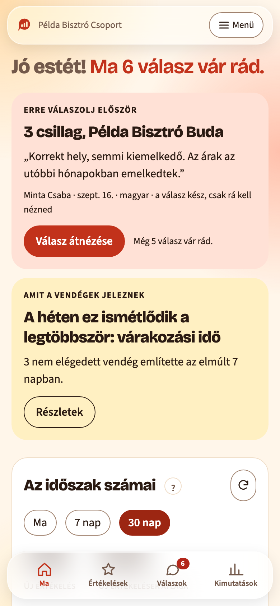
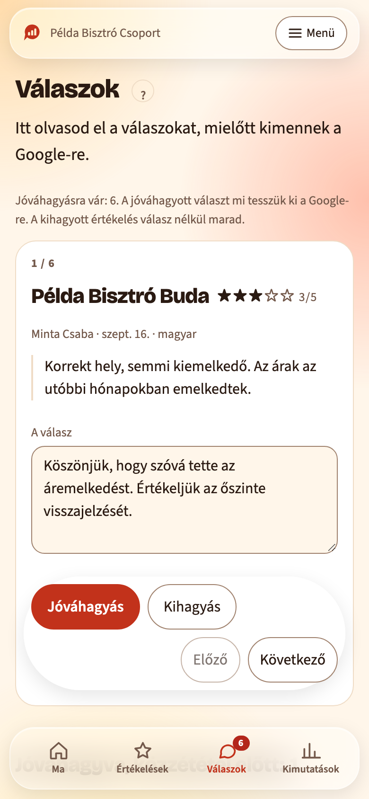
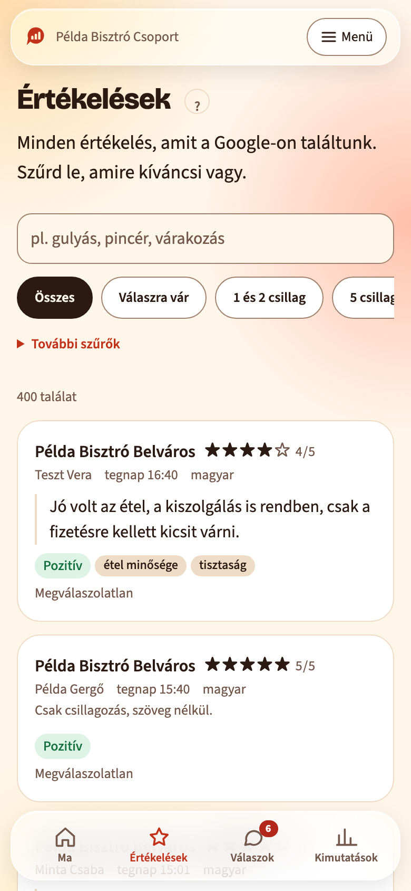
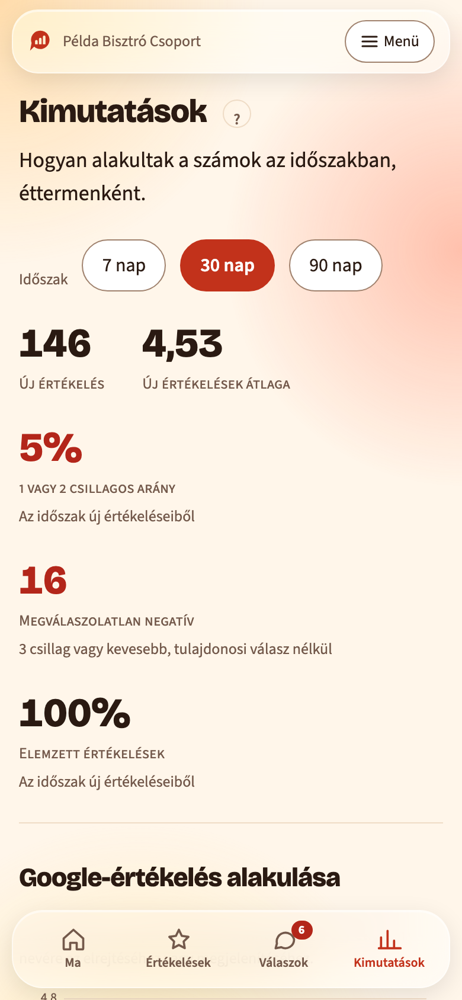

Minden értékelés. Egy helyen.
A BistroTech letölti az éttermeid Google-értékeléseit, megírja rájuk a választ, és reggelente elküldi, mi történt tegnap. Minden választ te hagysz jóvá.
- Minden étterem, minden nap, egy jelentésben.
- Minden választ te hagysz jóvá, mielőtt kimegy.
- Magyarul, magyar éttermeknek.
- 14 napig ingyen, kötöttség nélkül.
Minden reggel egy jelentés.
2026. szept. 15., kedd
Példa Bisztró · 3 új · átlag 4,33
5 csillagos: 2 4 csillagos: 0 3 csillagos: 1 2 csillagos: 0 1 csillagos: 0
Google: 4,6 (1284)
Minta Étterem · 1 új · átlag 2,00
5 csillagos: 0 4 csillagos: 0 3 csillagos: 0 2 csillagos: 1 1 csillagos: 0
Google: 4,4 (612)
Teszt Kávézó · 0 új · Google: 4,7 (238)
Σ Összesen: 4 új értékelés
5 csillagos: 2 4 csillagos: 0 3 csillagos: 1 2 csillagos: 1 1 csillagos: 0
Megválaszolatlan negatívok · 1
Minta Étterem · 2 csillag · szept. 12.
„A leves langyos volt, és húsz percet vártunk a számlára.”
7:45
PéldákÍgy jönnek az értékelések, minden étteremből egy helyre.
Példa5 csillagPélda Bisztró
„Isteni volt a rántott csirke, és gyorsan kihozták.”
Teszt Anna
Példa2 csillagMinta Étterem
„Húsz percet vártunk az asztalra, pedig foglaltunk.”
Példa Gergő
Példa4 csillagTeszt Kávézó
„Jó a kávé. A sütit legközelebb melegebben kérném.”
Minta Dóra
Példa5 csillagMinta Étterem
„Kedves kiszolgálás, a gyerekeknek is volt menü.”
Példa Réka
Példa1 csillagPélda Bisztró
„Hideg volt a köret, és senki nem kérdezte, milyen volt.”
Teszt Bence
Példa3 csillagTeszt Kávézó
„Rendben volt minden, csak hangos a zene.”
Minta Péter
Példa5 csillagPélda Bisztró
„Lovely goulash and very friendly staff.”
Teszt Emma
Példa4 csillagMinta Étterem
„Gutes Essen, aber etwas laut.”
Minta Lili
Illusztráció. A vendégek, az éttermek és a szövegek kitaláltak.
Egy reggel a BistroTechhel
Akkor nyitod meg, ha jóvá akarsz hagyni egy választ, vissza akarsz nézni egy hónapot, vagy el akarod olvasni, mit írtak a vendégek.
-
Ma
Egy mondatban megmondja, mi a teendő. Alatta kártyákon a részletek.

-
Válaszok
A válaszok sorban állnak, elöl a legrosszabb értékelés. Elolvasod, ha kell, átírod, jóváhagyod.

-
Értékelések
Minden értékelés egy helyen, kereshetően, étterem és csillag szerint.

-
Kimutatások
Megnézed, mi ismétlődik: témák, éttermek egymás mellett, napszakok.

A képek a bemutatófiókról készültek. Az éttermek nevei, a vendégek szövegei és a számok kitaláltak.
Próbáld ki: hagyj jóvá egy választ.
Példa Bisztró
Minta Katalin
„A leves langyos volt, és húsz percet vártunk a számlára.”
Ha a Google-on kezelőnek vettél fel minket, pár percen belül kitesszük. Ha még nem, egy gombbal kimásolod, és megnyitjuk neked a Google-t.
A kihagyott értékelés válasz nélkül marad. Az Értékelések között később is megtalálod.
Illusztráció. A vendég, az étterem és a szöveg kitalált. Innen nem megy ki semmi.
Kedves Katalin, köszönjük, hogy megírta. Sajnáljuk, hogy langyos volt a leves, és sokat kellett várnia a számlára. Továbbadtuk a konyhának és a felszolgálóknak. Reméljük, visszatér, és akkor minden a helyén lesz. A Példa Bisztró csapata
Kedves Katalin, köszönjük, és sajnáljuk a langyos levest meg a hosszú várakozást. Továbbadtuk a csapatnak. A Példa Bisztró csapata
Kedves Katalin, nagyon köszönjük, hogy időt szánt ránk. Bosszant minket, hogy langyos volt a leves, és hogy ennyit kellett várnia a számlára. Továbbadtuk a konyhának és a felszolgálóknak. Szeretnénk, ha legközelebb jó szívvel állna fel az asztaltól. A Példa Bisztró csapata
Kedves Katalin, köszönjük a visszajelzést. A leves hőmérséklete és a húsz perc várakozás a számlára nem felel meg annak, ahogy dolgozni szeretnénk. Mindkettőt továbbadtuk a konyhának és a felszolgálóknak. A Példa Bisztró csapata
Kedves Katalin, köszönjük, hogy megírta. Sajnáljuk, hogy langyos volt a leves, és sokat kellett várnia a számlára. Továbbadtuk a konyhának és a felszolgálóknak. Reméljük, visszatér, és akkor minden a helyén lesz. A Példa Bisztró csapata
Kedves Katalin, köszönjük, hogy megírtad. Sajnáljuk, hogy langyos volt a leves, és sokat kellett várnod a számlára. Továbbadtuk a konyhának és a felszolgálóknak. Reméljük, visszajössz, és akkor minden a helyén lesz. A Példa Bisztró csapata
Jóváhagyva. Ha a Google-on kezelőnek vettél fel minket, pár percen belül kitesszük. Ha még nem, egy gombbal kimásolod, és megnyitjuk neked a Google-t.
Kihagyva. A kihagyott értékelés válasz nélkül marad.
Visszavontuk. A válasz újra jóváhagyásra vár.
A válasz újra jóváhagyásra vár.
Visszaállítottuk az eredetit.
Ami még benne van
Napi jelentés
Abban az órában érkezik, amit beállítasz. Telegramon, ha összekötöd, és mindig a fiókodban.
Riasztás
Szólunk, ha egy étteremnél egycsillagos sorozat jön, vagy esik az átlag.
Módosításfigyelő
Látod, ha egy vendég utólag átírja az értékelését, és azt is, miről mire.
Listafigyelő
Ha a Google értékeléseket vesz le a profilodról, a jelentésben látod.
Csapat
Meghívod a kollégákat, és te döntöd el, ki melyik éttermet látja.
Asszisztens
Kérdezhetsz tőle. A saját értékeléseidből válaszol, és megmondja, mennyiből.
Tripadvisor
Ha bemásolod az étterem Tripadvisor-címét, azok az értékelések is megjönnek, külön.
Telefonon
Felteheted a telefonod kezdőképernyőjére, és úgy nyílik, mint egy alkalmazás.
Témák és ételek
Kiolvassuk, mi ismétlődik a vendégek szövegeiben, és melyik fogásról mit írnak.
Hogyan indul
Négy lépés. Az étterem felvétele után pár perccel már látod az értékeléseidet. A Google-hozzáférést külön állítod be, és csak a válaszok kitételéhez kell.
-
Regisztrálsz
Megadod az e-mail-címed és egy jelszót. A próbaidőszak 14 napig tart, és alatta nem állítunk ki számlát.
-
Felveszed az éttermet
Megkeresed az éttermet név szerint. Pár percen belül látod a legutóbbi értékeléseit és az első számokat. Több étterem is mehet egy fiókba.
-
Kezelőnek felveszel minket
A Google cégprofilon kezelőként felveszed a mi fiókunkat. Ettől kezdve ki tudjuk tenni a jóváhagyott válaszokat. Amíg ez nincs meg, a kész választ egy gombbal kimásolod, és magad illeszted be. A hozzáférést bármikor visszaveheted.
-
Beállítod a napi jelentést
Összekötöd a Telegramot, és kiválasztod az időpontot. Az első napi jelentés a következő reggelen érkezik, utána minden nap ugyanakkor. A fiókodban akkor is megtalálod, ha nem kötsz össze semmit.
Tizenegy étterem, minden reggel
A BistroTech egy tizenegy éttermet üzemeltető budapesti csoportnál fut, minden reggel. Ott kezdődött, és ott megy élesben azóta is.
A csoportot és az éttermeit nem nevezzük meg, és nem mutatunk tőlük értékelést. Ez a mi döntésünk, nem az ügyfél kérése.
Mi van a csomagokban
Három csomag. A figyelés, a napi jelentés és a válaszok mindháromban benne vannak. A különbség az, hogy mennyit olvasunk ki a vendégek szövegeiből.
-
Induló
Az alap, minden étteremhez.
Havi díj éttermenként, + áfaÁr hamarosan
-
Elemző
Arra válaszol, mit mondanak folyton.
Havi díj éttermenként, + áfaÁr hamarosan
-
Teljes
Arra válaszol, kiről és miről beszélnek.
Havi díj éttermenként, + áfaÁr hamarosan
Automata válasz bármelyik csomaghoz
Alapból csak a pozitív értékelésekre megy ki válasz úgy, hogy előtte senki nem olvassa el. Az egy- és kétcsillagosakra csak akkor, ha te kapcsolod be.
Havi díj éttermenként, + áfaÁr hamarosan
Csoportoknak
Több étterem egy fiókban, egymás mellett. Te döntöd el, ki melyik éttermet látja. Tíz étterem fölött a csomagot és az árat személyesen végigvesszük veled.
Kérj bemutatótGyakori kérdések
Részletesebben a súgóban. Irány a súgó
Kell hozzá bármit telepíteni?
Nem. Böngészőben megy, telefonon és gépen is. Ha szeretnéd, a telefonod kezdőképernyőjére is felteheted.
Hozzányúltok a Google-profilomhoz?
Csak akkor, ha kezelőként felveszel minket. Akkor a jóváhagyott válaszokat mi tesszük ki. A hozzáférést bármikor visszaveheted.
Kimehet válasz a tudtom nélkül?
Nem. Minden választ te hagysz jóvá. Az automata válasz külön kapcsolható be, és alapból csak a pozitív értékelésekre megy.
Milyen nyelven írjátok a választ?
Azon a nyelven, amelyen a vendég írt.
Kell Telegram?
Nem. A jelentés minden reggel a fiókodban is megvan. Telegramra akkor küldjük, ha összekötöd.
Mennyibe kerül?
A csomagok árát hamarosan közzétesszük. A 14 napos próbaidő alatt nem állítunk ki számlát.
Több étterem is mehet egy fiókba?
Igen. Tíz étterem fölött a csomagot személyesen végigvesszük veled.
Kezdd el ingyen, 14 napig
Regisztrálsz, felveszed az éttermet, és pár perc múlva látod az értékeléseidet. Az első jelentés másnap reggel jön.